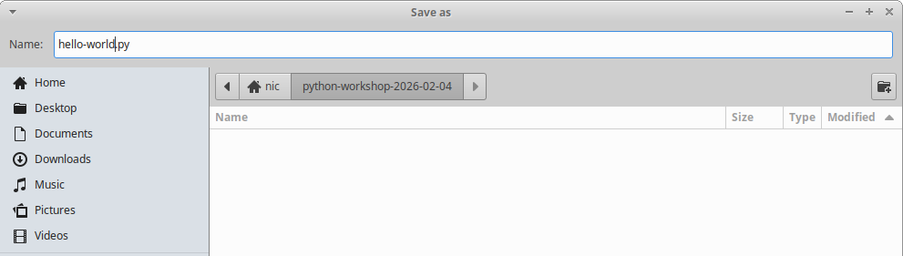

After clicking the run button you'll be prompted to save the script as a text file
Make sure to save the script with a memorable name!
Congratulations 🎉
How do we automate repetitive tasks?
Let's try to recreate this output:
Loop starting!
Loop number 1
Loop number 2
Loop number 3
Loop number 4
Loop number 5
Loop number 6
Loop number 7
Loop number 8
Loop number 9
Loop number 10
Loop finished!
print("Loop starting!")
for i in range(10):
print("Loop number ", i)
print("Loop finished!")
Note the indentation ⇥ before the print statement
This indentation is achieved using the tab key
The final line is not indented, and therefore is not a part of the loop
Try experimenting with indentation and with other parts of the code
Note there's an offset on the numbers that are output! How could we fix that?
while True:
print("I'm looping!")
i!
Congratulations 🎉
if forecast is "rain":
print("I'm bringing my umbrella! ☂️")
else:
print("I'm bringing my hockey gear! 🏑")
forecast"rain" or it could be something else!"sun", "thunderstorm" etc.
forecast is what's known as a variable!
>>> forecast = "rain"
>>> print(forecast)
rain
>>> forecast = "shine"
>>> print(forecast)
shine
>>> forecast = get_weather_forecast("tomorrow")
>>> print(forecast)
showers
forecast, but it can be series of alphanumeric characters or underscores
🌟
It's often useful to put some thought into the naming of variables - like comments, good variable naming can help future developers (including yourself) understand the code better.